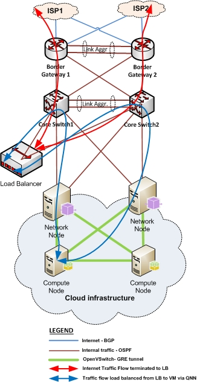
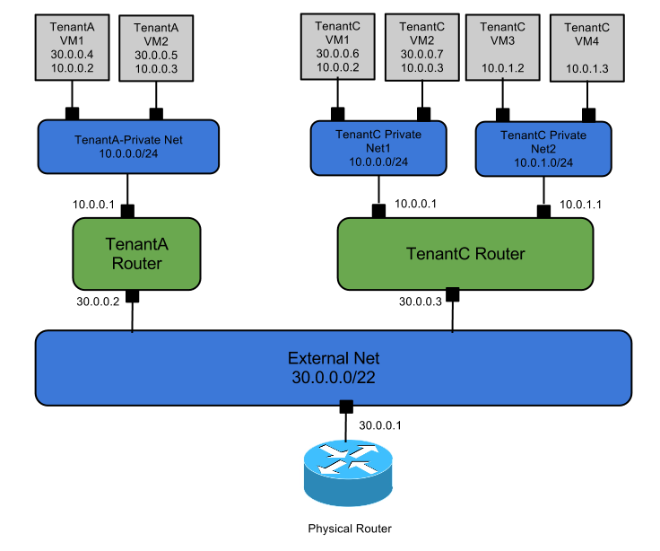
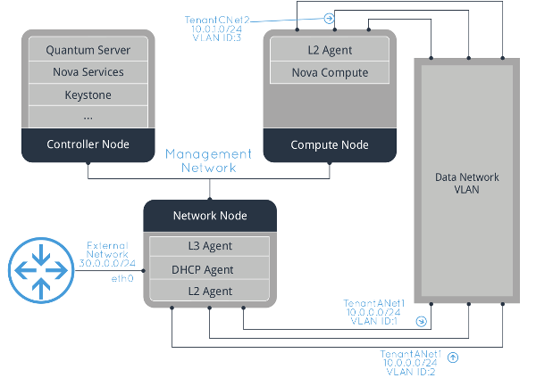

东网云平台采用SDN(软件定义网络)技术，以实现云平台的网络方案。本方案主要目 的是构建一个测试方案，以便我们有足够的依据参考来完善SDN的各方面性能。
我们的SDN方案，主要采用openstack的neutron组件来完成，然后做个LB看起来完善一点，整体的网络拓扑结构应该是这样的：
假设我们会建立这样几个租户，他们分配的网段和隔离关系是这样的：
我们使用vlan模式，对于openstack而言，几个重要的节点间的关系，是这样的：
我们考虑使用的测试工具是Iperf，它是一个网络性能测试工具。可以测试TCP和UDP 带宽质量，可以测量最大TCP带宽，具有多种参数和UDP特性，可以报告带宽，延迟抖 动和数据包丢失。
网友总结的使用方法如下: